Nos encontramos en un momento decisivo del uso de la tecnología para extender y potenciar nuestra
capacidad de comunicarnos. La globalización de Internet se ha producido más rápido de lo que cualquiera
hubiera imaginado. El modo en que se producen las interaciones sociales, comerciales, politicas y personales cambia
forma continua para estar al dia con la evolucion de esta red global. En la próxima etapa de nuestro desarrollo
los innovadores usaran Internet como punto de inicio para sus esfuerzos, creando nuevos productos y servicios
diseñados especificamente para aprovechar las funcionalidades de la red. A medida que los programadores impulsen los
limites de lo posible, las funcionalidades de las redes interconectadas que crean la internet jugarán un papel
cada vez más grande en el éxito de estos proyectos.
Este capitulo presenta la plataforma de redes de datos de la cual dependen cada vez más nuestras relaciones sociales y
comerciales. El material presenta las bases para explotar los servicios, las tecnologías y los problemas que enfrentan los
profesionales de red mientras diseñan, desarrollan y mantienen la red moderna.
La tecnología ayuda a crear un mundo en el que ....Dibuje y rotule un mapa de Internet como la interpreta en el presente. Incluya la ubicacion de su hogar, lugar de estudios o universidad y del cableado, los equipos y los dispositivos correspondientes, entre otros elementos. Es posible que desee incluir algunos de los elementos siguientes:
... se vuelven menos importantes en nuestra vida cotidiana.
- Las fronteras nacionales
- lsa distancias geográficas
- las limitaciones físicas
Los dispositivos necesarios son un servidor, router, rosetas, switches,cableado, pc o dispositivos que se conectan a la red privada seguidamente dispositivos de almacenamiento media de los datos a consultar.2. Después de revisar los dibujos de sus compañeros de clase, ¿qué similitudes y diferencias encontró en los diseños de algunos modelos? ¿Qué modificaciones le haría a su dibujo después de revisar los otros?
Los cambios serian en las conexiones y la falta de switches, que son los que permiten las multiples conexiones a los servidores3. ¿De qué manera los íconos en el dibujo de una red podrían organizar el proceso mental y facilitar el aprendizaje? Justifique su respuesta.
Un ejemplo sería:
[Zona privada] PC --> Router --> [Zona pública] Servidor del proveedor de Internet --> Internet --> Servidor media con la info solicitada
Servidor media con la info solicitada --> Internet --> Servidor del proveedor -->[Zona pública] Router Casa [Zona privada] --> PC
Entre todos los elementos esenciales para la existencia humana, la necesidad de interactuar está
justo después de la necesidad de sustentar la vida. La comunicación es casi tan importante para
nosotros como el aire, el agua, los alimentos y un lugar para vivir.
En el mundo actual, estamos conectados como nunca antes gracias al uso de redes. Las personas que tienen
alguna idea pueden comunicarse de manera instantánea con otras personas para hacer esas ideas realidad.
Las noticias y los descubrimientos se conocen en todo el mundo en cuestión de segundos. Incluso, las personas
pueden conectarse y jugar con amigos que estén del otro lado del océano y en otros contientes.
Imagine un mundo sin Internet, sin Google, YouTube, mensajería instantánea, ... Un mundo sin sitios web
de comparación de precios, donde podríamos evitar hacer fila ya que no podríamos comprar en línea y tampoco
podríamos buscar rápidamente números de teléfono ni indicaciones en mapas para llegar a diversos lugares con
solo un clic.
¿Cuán diferentes serían nuestras vidas sin todo esto? Vivíamos en ese mundo hace apenas 15 o 20 años. Sin embargo,
con el correr de los años, las redes de datos se expandieron y tansformaron lentamente para mejorar la calidad de vida
de las personas en todo el mundo.
Los avances en la tecnología de red son, quizá, los agentes de cambio más siginificativos en el mundo actual.
Gracias a estos avances, podemos crear un mundo en el que las fronteras nacionales, las distancias geográficas
y las limitaciones físicas se vuelven menos importantes y se convierten en obstáculos cada vez más de sortear.
Internet cambió la manera en la que se prducen las interacciones sociales, comerciales, políticas y personales. La
naturaleza inmediata de las comunicaciones en internet alienta la formación de comunidades mundiales. Estas comunidades
permiten una interacción social que no depende de la ubicación no de la zona horaria. La creación de comunidades en linea
para el intercambio de ideas e información tiene el potencial de aumentar las oportunidades de productividad en todo el
planeta.
Para Cisco, esto se denomina red humana. La red humana se enfoca en el impacto que tienen Internet y las redes en las
personas y las empresas.
Las redes cambiaron la forma en que aprendemos. El acceso a la enseñanza de alta calidad
ya no está restingido a los estudiantes que viven en las inmediaciones de donde dicha enseñanza
se imparte.
El aprendizaje a distancia en linea eliminó las barreras geográficas y mejoró las oportunidades de
los estudiantes. Redes confiables y sólidas respaldan y enriquecen las experiencias de aprendizaje
de los estudiantes. Mediante las redes, se ofrece material educativo en una amplia variedad de formatos,
que incluye actividades, evaluaciones y comentarios.
La globalización de Internet conduce a nuevas formas de comunicación que les dan a las personas la capacidad
de crear información a la que pueden acceder una audiencia mundial.
Algunas formas de comunicación incluyen las siguientes:
En el ámbito empresarial, al comienzo las empresas utilizaban las redes de datos para registrar y administrar internamente información financiera,
información de clientes y los sistemas de nómina de pagos de los empleados. Estas redes empresariales evolucionaron para permitir la transmisión de
muchos tipos de servicios de información, incluyendo correo electrónico, video, mensajería y telefonía.
El uso de redes para capacitar a los empleados de forma eficaz y rentable tiene una aceptación cada vez mayor. Las oportunidades de aprendizaje en
linea pueden disminuir el transporte costoso y prolongado, e incluso asegurar que todos los empleados estén correctamente capacitados para realizar sus
tareas de manera productiva y segura.
Hay muchas historias de éxito que muestran formas innovadoras en las que las redes se utilizan para hacernos más exitosos en el lugar de trabajo.
Historias Cisco.
Internet también se utiliza para formas tradicionales de entrenamiento. Escuchamos artistas grabados, vemos o disfrutamos de avances de peliculas, leemos
libros completos y descargamos material para acceder luego sin conexión. Los eventos deportivos y conciertos en vivo se pueden sentir en el momento en que
ocurren, o se pueden grabar y ver en cualquier momento.
Las redes permiten la creación de nuevas formas de entrenamiento, tales como juegos en linea. Los jugadores participan en cualquien clase de competencia en linea que los
diseñadores de juegos puedan imaginar. Competimos con amigos y enemigos de todos el mundo como si estuviéramos todos en la misma habitación.
Incluso las actividades fuera de linea se fortalecen con el uso de servicios de colaboración de red. Las comunidades mundiales de interés han crecido rápidamente.
Compartimos experiencias comunes y pasatiempos fuera de nuestro vecindario, ciudad o región. Los fanáticos del deporte comparten opiniones y hechos sobre sus equipos favoritos.
Los coleccionistas muestran colecciones y reciben comentarios de expertos.
Las redes mejoran nuestra experiencia, independientemente de la forma de diversión que disfrutemos.
Objetivo
GitHub, GitLabPaso 2- Indique, al menos, dos motivos para usar herramientas de colaboración.
Conocimiento comunitario, colaboración en corrección de bugs.
GMAILPaso 2- Compartir documento.
CompartirPaso 3-Wiki.
Hay redes de todo tamaño. Pueden ir desde redes simples, compuestas por dos PC's, hasta redes que conectan
millones de dispositivos.
Las redes simples que se instalan en hogares permiten compartir recursos, impresoras, documentos, imágenes
y música, entre algunas PC locales.
Con frecuencia, las personas que trabajan desde una oficina en el hogar o remota y necesitan conectarse a una red
corporativa u otros recursos centralizados configuran redes de oficinas en el hogar y de oficinas pequeñas. Además,
muchos emprendedores independientes utilizan redes de oficinas en el hogar y de oficinas pequeñas para publicar
y vender productos, hacer pedidos y comunicarse con clientes.
En las empresas y grandes organizaciones, las redes se pueden utilizar incluso de manera más amplia para proporcionar
consolidación y almacenamiento de la información en los servidores de red, así como acceso a dicha información.
Las redes también proporcionan formas de comunicación rápida, como el correo electrónico y la mensajería instantánea,
y permiten la colaboración entre empleados. Además de las ventajas que perciben en el nivel interno, muchas organizaciones utilizan
sus redes para ofrecer productos y servicios a los clientes a través de su conexión a Internet.
Internet es la red más extensa que existe. De hecho, el término Internet siginifica "red de redes". Internet es, literalmente,
una colección de redes privadas y públicas interconectadas, como las que se describen más arriba.
Las redes domésticas pequeñas conectan algunas computadoras entre sí y con Internet.
Las redesde oficinas pequeñas y oficinas en el hogar o redes SOHO, permiten que las computadoras de una oficina en el hogar o una oficina remota se conecten a una red corporativa y tenfan acceso a recursos compartidos centralizados.
Las redes medianas a grandes, como las que utilizan en corporaciones y escuelas, pueden tener muchas ubicaciones con cientos o miles de computadoras interconectadas.
Internet es una red de redes conectada a cientos de millones de computadoras en todo el mundo.
Todas las PC conectadas a una red que participan directamente en las comunicaciones de la red se clasifican como hosts. Los hosts
también se denominan terminales.
Los servidores son PC con software que les permite proporcionar información, por ejemplo correo electrónico o páginas web, a otros
terminales de la red. Cada servicio requiere un software de servidor independiente. Por ejemplo, para proporcionar servicios web a la red,
un servidor necesita un software de servidor web. Una PC con un software de servidor puede proporcionar servicios a uno o varios clientes
simultáneamente. Además, una única PC puede ejecutar varios tipos de software de servidor. En una empresa doméstica o una pequeña empresa,
puede ser necesario que una PC funcione como servidor de archivos, servidor web y servidor de correo electrónico.
Los clientes son PC que tienen instalado un software que les permite solicitar información al servidor y mostrar la información obtenida. Un
navegador web, como Chrome o Firefox, es un ejemplo de sotfware de cliente. Una única PC también puede ejecutar varios tipos de software de
cliente. Por ejemplo. un usuario puede revisar su correo electrónico y ver una página web utilizada el servicio de mensajería instantánea y escucha
la radio a través de Internet.
El software de servidor y el de cliente normalmente se ejecutan en computadoras distintas, pero también es posible que
una misma computadora cumpla las dos funciones a la vez. En pequeñas empresas y hogares, muchas PC's funcionan como
servidores y clientes en la red. Este tipo de red se denomina red entre pares.
Las ventajas y desventajas de las redes entre pares se muestran a continuación:
PC-1⇛ "Tengo una impresora para compartir" → Uso compartido de impresora.
PC-2⇛ "Tengo archivos para compartir" → Uso compartido de archivos.
Las ventajas de la red entre pares:Las desventajas de las redes entre pares:
- Configuración sencilla.
- Menor complejidad.
- Menor costo, dado que es posible que no se necesiten dispositivos de red ni servidores dedicados
- Se pueden utilizar para tareas sencillas como transferir archivos y compartir impresoras.
- Administración descentralizada.
- No son tan seguras.
- No son escalables.
- Todos los dispositivos pueden funcionar como clientes y como servidores, lo que puede lentificar el rendimiento.
La ruta que toma un mensaje desde el origen hasta el destino puede ser tan sencilla como un solo cable que conecta una PC
con otra o tan compleja como una red que literalmente abarca el mundo. Esta infraestructura de la red proporciona el canal
estable y confable por el cual se producen las comunicaciones.
La infraestructura de red contiene tres categorias de componentes de red:
Los dispositivos de red con los que la gente está más familiarizada se denominan terminales.
Un terminal es el origen o el destino de un mensaje transmitido a través de la red.
Para distinguir un terminal de otro, cada terminal en la red se identifica por una direccion.
Cuando un terminal inicia una comunicación, utiliza la dirección del terminal de destino para
especificar adónde se debe enviar el mensaje.
Los dispositivos intermedios conectan los terminales individuales a la red y pueden conectar varias
redes individuales para formar una internetwork. Los dispositivos intermedios proporcionan conectividad
y garantizan el flujo de datos en toda la red.
Estos dispositivos utilizan la dirección del terminal de destino, conjuntamente con información sobre las
interconexiones de la red, para determinar la ruta que deben tomar los mensajes a través de la red.
Un dispositivo de red intermediario puede admitir algunas de estas funciones o todas ellas.
La comunicación a través de una red es transportada por un medio. El medio proporciona el canal por
el cual viaja el mensaje desde el origen hasta el destino.
Las redes modernas utilizan principalmente tres tipos de medios para interconectar los dispositivos
y proporcionar la ruta por la cual pueden transmitirse los datos. Son:
¿Cuál es la distancia máxima en la que el medio puede transportar una señal exitosamente?
Explicacion transmisión de datos
¿En qué tipo de entorno se instalará el medio?
Todo tipo de entornos, industrias, escuelas, estudios, hogares.
¿Cuál es la cantidad de datos y la velocidad a la que se deben transmitir?
Velocidad de transmisión
¿Cuál es el costo del medio y de la instalación?
Costo medio de instalación
Los diagramas de redes se utilizan simbolos para representar los diferentes dispositivos y conexiones que componen una red. Un diagrama
permite comprender fácilmente la forma en la que se conectan los dispositivos que componene una red. Un fiagrama permite comprender fácilmente
la forma en la que se coenctan los dispositivos en una red grande. Este tipo de representación de una red se denomina diagrama de topología. La
capacidad de reconocer las representaciones lógicas de los componentes físicos de la red es fundamental para poder visualizar la organización de una red.
Además de estas representaciones, se utiliza terminología espefializada al hablar sobre cómo se conectan estos dispositivos y los medios unos a otros. Algunos
términos importantes para reconrtar son:

Los diagramas de topología son obligatorios para todos los que estan trabajando en redes. Estos diagramas proporcionan un mapa visual que muestra cómo está conectada la red. Existen dos tipos de diagramas de topología:

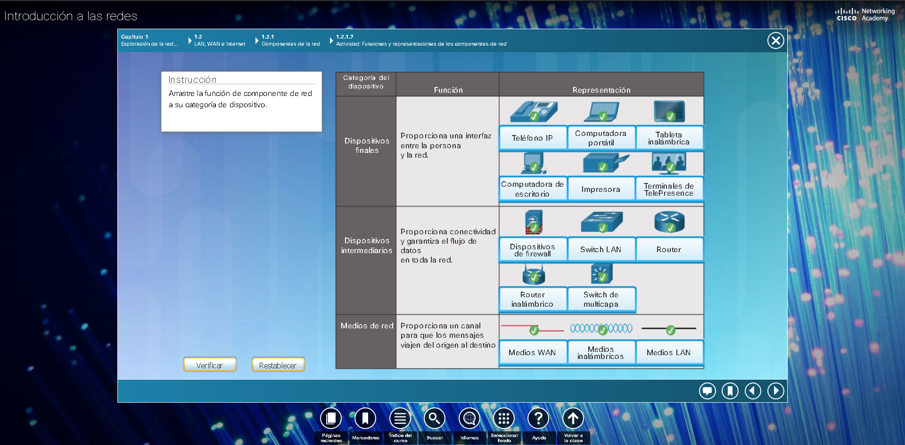
Test de conocimientos de componentes de red.
Las infraestructuras de red pueden variar en gran medida en términos de:

Las redes LAN son infraestructuras de red que abarcan un área geográfica pequeña. Las características especificas de las LAN incluyen lo siguiente:
Las redes WAN son infraestructuras de red que abarcan un área geográfica extensa.
Normalmente, la administración de las WAN está a cargo de proveedores de servicios (SP)
o proveedores de servicios de internet (ISP).
Las características específicas de las WAN incluyen lo siguiente:
Internet es una colección global de redes interconectadas (internetworks o internet para abreviar).
En la figura se muestra una forma de ver a la Internet como una colección de LAN y WAN interconectadas.
Algunos de los ejemplos de LAN están conectados entre sí a través de una conexión WAN. Las WAN están
conectadas entre sí. Las líneas de conexión WAN rojas representan todas las variedades de formas en
las que conectamos las redes. Las WAN pueden conectarse mediante cables de cobre, cables de fibra óptica
y transmisiones inalámbricas (no se muestran).
Internet no pertenece a una persona o un grupo. Garantizar una comunicación efectiva en esta infraestructura
heterogénea requiere la aplicación de estándares y tecnologías uniformes, y comúnmente reconocidas, así como
también la cooperación de muchas agencias de administración de redes. Existen organizaciones que se
desarrollaron con el fin de ayudar a mantener la estructura y la estandarización de los protocolos y los
procesos de Internet.
Entre estas organizaciones, se encuentran el Grupo de trabajo de ingeniería de Internet (IETF), la Corporación
de Internet para la Asignación de Nombres y Números (ICANN) y el Consejo de Arquitectura de Internet (IAB),
entre muchas otras.
Nota: el término “internet” (con “i” minúscula) se utiliza para describir un conjunto de redes interconectadas.
Para referirse al sistema global de redes de computadoras interconectadas, o World Wide Web, se utiliza el
término “Internet” (con “I” mayúscula).
Hay otros dos términos que son similares al término Internet.

Existen varias formas de conectar a usuarios y organizaciones a Internet.
Generalmente, los usuarios domésticos, los trabajadores a distancia ( trabajadores remotos) y oficinas pequeñas requieren una conexión a un proveedor
de servicios de Internet (ISP) para acceder a Internet. Las opciones de conexión varian considerablemente según los ISP y la ubicación geográfica.
Sin embargo, las opciones más utilizadas incluyen banda ancha por cable, banda ancha por linea de suscriptor digital (DSL), redes WAN inalámbricas y
servicios móviles.
Normalmente, las organizaciones necesitan acceder a otros sitios corporativos y a Internet. Para admitir servicios empresariales, como telefonía IP,
videoconferencias y el almacenamiento en centros de datos, se requieren conexiones rápidas.
Por lo general, los proveedores de servicios (SP) son quienes proporcionan interconexiones de nivel empresarial. Los servicios de nivel empresarial
más comúnes son DSL empresarial, lineas arrendadas y red Metro Ethernet.
En la figura, se muestran opciones comunes para los usuarios de oficinas pequeñas y oficinas en el hogar, que incluyen las siguientes:

Las opciones de conexión corporaticas difieren de las opciones que tienen los usuarios domésticos. Es posible que las empresas
requieren un ancho de banda mayor y dedicado, además de servicios administrados. Las opciones de conexión disponibles varían
según el tipo de proveedores de servicios que haya en las cercanías.
En la figura, se muestran las opciones de conexión comunes para las empresas, que incluyen las siguientes:

Packet Tracer es un programa de software flexible y divertido para llevar a casa que lo ayudará con sus estudios
de Cisco Certified Network Associate (CCNA). Packet Tracer le permite experimentar con comportamientos de red,
armar modelos de red y preguntarse "¿Qué pasaría si...?".
En esta actividad, explorará una red relativamente compleja que pone en relieve algunas de las características de
Packet Tracer.
Piense en una escuela construida hace cuarenta años. En ese entonces, las aulas contaban con conexiones por
cable para la red de datos, la red telefónica y la red de vídeo para los televisores. Estas redes separadas
no podían comunicarse entre sí, como se muestra en la figura. Cada red utilizaba tecnologías diferentes para
transportar la señal de comunicación. Cada red tenía su propio conjunto de reglas y estándares para asegurar una
comunicación satisfactoria.
Hoy, las redes separadas de datos, telefonía y vídeo están convergiendo. A diferencia de las redes dedicadas,
las redes convergentes pueden transmitir datos, voz y vídeo entre muchos tipos diferentes de dispositivos en la
misma infraestructura de red, como se muestra en la figura. Esta infraestructura de red utiliza el mismo conjunto
de reglas, acuerdos y estándares de implementación.
 Las redes de datos convergentes transportan servicios múltiples en una red.
Las redes de datos convergentes transportan servicios múltiples en una red.
Objetivos.
| Proveedor de servicios de Internet. | Nombre de producto del servicio convergente. |
| Proveedor de servicios de Internet. | Nombre de producto del servicio convergente. | Costo por mes. | Velocidad de descarga. |
| Nombre de empresa. | Sector. | Tecnologías de convergencia. |
Las redes deben admitir una amplia variedad de aplicaciones y servicios, así como funcionar a través de los distintos
tipos de cables y dispositivos que componen la infraestructura física. En este contexto, el término "arquitectura de red"
se refiere a las tecnologías que dan soporte a la infraestructura y a los servicios y las reglas, o protocolos, programados
que trasladan los datos a través de la red.
A medida que las redes evolucionan, descubrimos que existen cuatro características básicas que las arquitecturas subyacentes
necesitan para cumplir con las expectativas de los usuarios.
Se espera que Internet esté siempre disponible para los millones de usuarios que confían en ese servicio. Para lograrlo, se requiere
una arquitectura de red desarrollada para tener tolerancia a fallas. Una red con tolerancia a fallas es aquella que limita el impacto
de las fallas, de modo que la cantidad de dispositivos afectados sea la menor posible. Además, se arma de forma tal que permita una
recuperación rápida cuando se produce una falla. Estas redes dependen de varias rutas entre el origen y el destino del mensaje. Si falla
una ruta, los mensajes se pueden enviar inmediatamente por otro enlace. El hecho de que haya varias rutas que conducen a un destino se
denomina "redundancia".
Una de las formas en las que las redes confiables proporcionan redundancia es mediante la implementación de una red conmutada por paquetes.
La conmutación por paquetes divide el tráfico en paquetes que se enrutan a través de una red compartida. Un solo mensaje, como un correo
electrónico o una transmisión de vídeo, se divide en múltiples bloques de mensajes, llamados paquetes. Cada paquete tiene la información
de dirección necesaria del origen y del destino del mensaje. Los routers dentro de la red conmutan los paquetes según la condición de la red
en ese momento. Esto significa que todos los paquetes en un mismo mensaje pueden tomar distintas rutas para llegar a destino. En la figura,
el usuario no se da cuenta y no se ve afectado por el cambio dinámico de rutas que hace el router cuando falla un enlace.
Esto no sucede en las redes de conmutación de circuitos que, tradicionalmente, se utilizan para las comunicaciones de voz. Una red de conmutación
de circuitos es aquella que establece un circuito dedicado entre el origen y destino antes de que los usuarios se puedan comunicar. Si la llamada
se termina de forma inesperada, los usuarios debian iniciar una nueva conexión.

Una red escalable puede expandirse rápidamente para admitir nuevos usuarios y aplicaciones sin afectar el rendimiento del servicio enviado a los
usuarios actuales. En la figura, se muestra cómo puede agregarse una red nueva a una red existente con facilidad. Además, las redes son escalables
porque los diseladores siguen los estándares y protocolos aceptados. Esto permite que los proveedores de software y hardware se centren en mejorar
los productos y servicios sin tener que preocuparse en la elaboración de un nuevo conjunto de reglas para porder funcionar en la red.

La calidad de servicio (QoS, Quality of Service) también es un requisito cada vez más importante para las redes de hoy en día.
Las nuevas aplicaciones disponibles para los usuarios en internetworks, como las transmisiones de voz y de vídeo en vivo generan
expectativas más altas sobre la calidad de los servicios que se proporcionan. ¿Alguna vez intentó mirar un vídeo con interrupciones
y pausas constantes? A medida que el contenido de datos, voz y vídeo sigue convergiendo en la misma red, QoS se convierte en un mecanismo
principal para administrar la congestión y garantizar el envío confiable de contenido a todos los usuarios.
La congestión se produce cuando la demanda de ancho de banda excede la cantida disponible. El ancho de banda de la red es la medida de
la cantidad de bits que se pueden transmitir en un segundo, es decir, bits por segundo (bps). Cuando se producen intentos de comunicaciones
simultáneas a través de la red, la demanda de ancho de banda puede exceder su disponibilidad, lo que provoca congestión en la red.
Cuando el volumen de tráfico es mayor de lo que se puede transportar en la red, los dispositivos colocan los paquetes en cola en la
memoria hasta que haya recursos disponibles para transmitirlos. En la figura, un usuario solicita una página web y otro está realizando
una lamda telefónica. Con una política de QoS, el router puede administrar el flujo de datos y el tráfico de voz, dando prioridad a las
comunicaciones de voz si la red se congestiona.
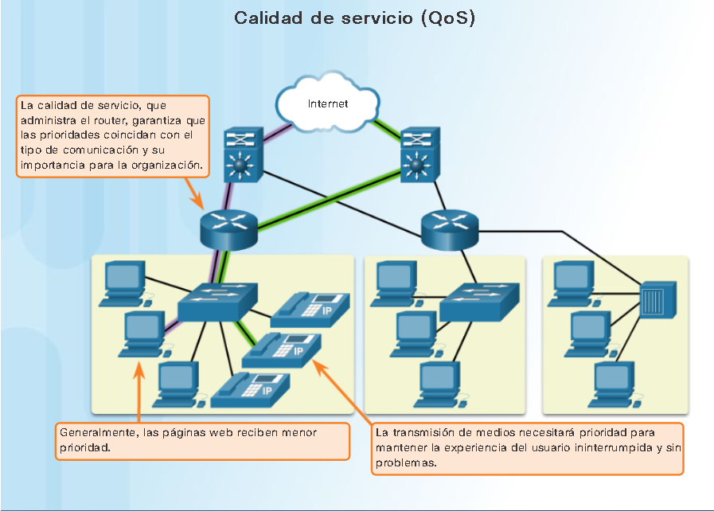
La infraestructura de red, los servicios y los datos contenidos en los dispositivos conectados a la red son
activos comerciales y personales muy importantes.Existen dos tipos de problemas de seguridad de red que se deben
tratar: la seguridad de la infraestructura de red y la seguridad de la información.
La seguridad de la infraestructura de una red incluye el aseguramiento físico de los dispositivos que proporcionan
conectividad y evitan el acceso no autorizado al software administrativo que reside en ellos, como se muestra en la
figura 1.

La seguridad de la información se refiere a proteger la información que contiene los paquetes que se transmiten por la
red y la información almacenada los dispositivos conectados a la red. Para alcanzar los objetivos de seguridad de la red,
hay tres requisitos principales, que se muestran en la figura 2.

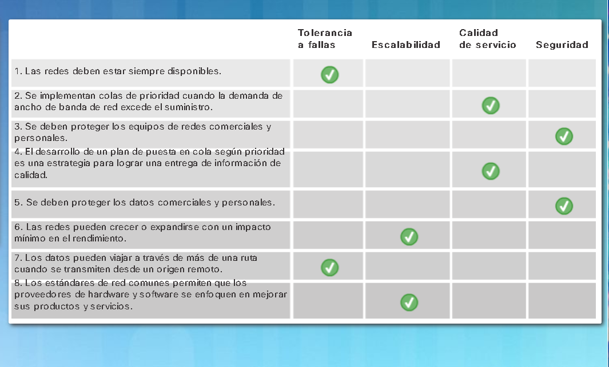
A medida que se lanza al mercado nuevas tecnologías y dispositivos para usuarios finales, las empresas y los consumidores deben continuar adaptándose a este entorno en constante evolución. La función de la red es transformarse para permitir que las personas, los dispositivos y la información estén conectados. Existen muchas nuevas tendencias de red que afectarán a organizaciones y consumidores. Algunas de las tendencias principales incluyen las siguientes:
El concepto de "cualquier dispositivo, a cualquier contenido, de cualquier forma" es una importante tendencia global que requiere cambios significativos en la forma en que se
utilizan los dispositivos. Esta tendencia se conoce como "Bring Your Own Device" o Traiga su propio dispositivo.
La tendencia BYOD les da a los usuarios finales la libertad de utilizar herramientas personales para acceder a información y comunicaciones a través de una red comercial o de campus.
Con el crecimiento de los dispositivos para consumidores - y la consiguiente caida en los costos-, se espera que los empleados y estudiantes cuenten con algunas de las herramientas
más avanzadas de computación y de redes para uso personal. Entre estas herramientas personales, se incluyen PC portátiles, PC ultraportátiles, tabletas, teléfonos inteligentes y lectores
de libros electrónicos. Estos dispositivos pueden ser propiedad de la empresa o el lugar de estudios, de una persona, o una combinación de ambas.
BYOD significa que puede usar cualquier dispositivo, de cualquier persona, en cualquier lugar. Por ejemplo, en el pasado, un estudiante que necesitaba acceder a la red del campus o a Internet
debía usar una de las PC del lugar de estudios. Por lo general, estos dispositivos eran limitados y se los veía como herramientas que servían únicamente para trabajar en el aula o en la
biblioteca. La conectividad extendida mediante acceso móvil y remota a la red del campus les da a los estudiantes una enorme flexibilidad y más oportunidades de aprendizaje.
Las personas quieren conectarse a la red no solo para acceder a aplicaciones de datos, sino también para colaborar entre sí. La colaboración se define como
"el acto de trabajar con otras personas en un proyecto conjunto". Las herramientas de colaboración, como Cisco WebEx que se muestra en la figura, brindan a los
empleados, estudiantes, profesores, clientes y partners una forma de conectarse, interactuar y lograr sus objetivos de forma inmediata.
Para las empresas, la colaboración es una prioridad esencial y estratégica, que utilizan para mantenerse competitivos. La colaboración también es una prioridad
en la educación. Los estudiantes necesitan colaborar para mayudarse mutuamente con el aprendizaje, para desarrollar las habilidades de trabajp en equipo que se
utilizan en la fuerza laboral y para trabajar juntos en proyectos en equipo.

Otra tendencia de red que tiene una importancia crítica en lo que respecta a la comunicación y el trabajo en colaboración es el vídeo. El vídeo se utiliza actualmente para propósitos
de comunicación, colaboración y entretenimiento. Las videollamadas se pueden hacer desde cualquier luhar que cuente con una conexión a Internet.
La conferencia de vídeo es una herramienta útil para realizar negocios a distancia, tanto en el ámbito local como global. A medida que las organizaciones se extienden más allá de los
límites geográficos y culturales, el video se convierte en un requisito crítico para una colabación eficaz.
La computación en la nube es otra tendencia global que cambia el modo en que accedemos a los datos y los almacenados. Este sistema nos permite almacenar archivos personales e incluso crear
copias de seguridad de nuestra unidad de disco duro completa en servidores a través de Internet. Mediante la nube, se puede acceder a aplicaciones de procesamiento de texto y edición de
fotografías, entre otras.
Para las empresas, la computación en la nube expande las funcionalidades de TI sin necesidad de invertir en infraestructura nueva, en capacitación de personal nuevo ni en licencias de software
nuevo. Estos servicios están disponibles a petición y se proporcionan de forma económica a cualquier dispositivo en cualquier lugar del mundo, sin comprometer la seguridad no el funcionamiento.
Existen cuatro tipos principales de nubes, que se muestran en la figura: nube pública, nube privada, nube híbrida y nube personalizada.
Las aplicaciones y los serivicios basados en la nube que se ofrecen en una nube pública están a disposición de la población en general. Los servicios pueden ser gratuitos u ofrecerse en el formato de pago según el uso, como el pago de almacenamiento en línea. La nube pública utiliza Internet para proporcionar servicios.
Las aplicaciones y los servicios basados en la nube que se ofrecen en una nube privada están destinados a una organización a una entidad específica, como el gobierno. Se puede configurar una nube privada utilizando la red privada de la organización, si bien el armado y el mantenimiento pueden ser costosos. Una organización externa que cuente con una seguridad de acceso estricta también puede administrar una nube privada.
Una nube híbrida consta de dos o más nubes (por ejemplo: una parte personalizada y otra parte pública.); ambas partes son objetos separados, pero están conectadoas a través de una arquitectura. En una nube híbrida, las personas podrían tener grados de acceso a diversos servicios según los derechos de acceso de los usuarios.
El vector más común para la pérdida de datos incluye software de mensajería instantánea y los sitios de medios sociales. Por ejemplo, el correo electrónico o ME interceptará ES mensajes puede capturar y mostrar la información confidencial. Ej: Servicios de salud, Gobierno, Medios de comunicación.
La computación en la nubes es posible gracias a los centros de datos. Un centro de datos es una instalación utilizada para alojar sistemas de computación y componentes relacionados. Un centro de datos puede ocupar una habitación en un edificio, un piso o más, o un edificio entero. Por lo general, la creación y el mantenimiento de centros de datos privados creados para alojar sus datos y proporcionar servicios a los usuarios. Las organizaciones más pequeñas, que no pueden costear el mantenimiento de su propio centro de datos privado, puede reducir el costo total de propiedad mediante el alquiler de servicios de servidor y almacenamiento a una organización en la nube con un centro de datos más grande.
Las tendencias de red no solo afectan la forma en que nos comunicamos en el trabajo y en el lugar de estudios, sino que también están cambiando prácticamente
cada aspecto del hogar.
Las nuevas tendencias del hogar incluyen la "tecnología del hogar inteligente". La tecnología del hogar inteligente se integra a los dispositivos que se utilizan
a diario, lo que permite que se interconecten con otros dispositivos y que se vuelvan más "inteligentes" o automatizados. Por ejemplo, imagine poder preparar un
plato y colocarlo en el horno para cocinarlo antes de irse de su casa para no regresar en todo el día. Imagine si el horno "reconociera" el plato que cocina y
estuviese conectado a su "calendario de eventos" para determinar cuándo debería estar listo para comer y pudiera ajustar la hora de inicio y la duración de la
cocción de acuerdo con esos datos. Incluso podría ajustar el tiempo y la temperatura de cocción sobre la base de los cambios en su agenda. Además, una conexión
mediante teléfono inteligente o tableta permite al usuario conectarse al horno directamente para realizar los cambios que desee. Cuando el plato está "disponible",
el horno envía un mensaje de alerta al dispositivo para usuarios finales especificando en el que indica que el plato está listo y se está calentando.
Esta situación no está muy lejos de ser real. De hecho, actualmente se desarrolla tecnología del hogar inteligente para todas las habitaciones de un hogar. La
tecnología del hogar inteligente se volverá más real a medida que las redes domésticas y la tecnología de Internet de alta velocidad lleguen a más hogares. Se
desarrollan nuevas tecnologías de red a diario para cumplir con estos tipos de necesidades crecientes de tecnología.
Las redes por línea eléctrica son una tendencia emergente para redes domésticas que utilizan los cables eléctricos existentes para conectar dispositivos, como se muestra en la figura.
El concepto "sin nuevos cables" se refiere a la capacidad de conectar un dispositivo a la red donde haya tomacorriente. Esto ahorra el costo de instalar cables de datos y no genera
ningún costo adicional en la factura de electricidad. Mdiante el uso de los mismos cables que transmiten electricidad, las redes por línea eléctrica transmiten información mediante el
envío de datos en ciertas frecuencias.
Mediante un adaptador estándar de línea eléctrica, los dispositivos pueden conectarse a la LAN donde haya un tomacorriente. Las redes por línea eléctrica son particularmente útiles en
el caso de que no se puedan utilizar puntos de acceso inalámbrico o de que estos no lleguen a todos los dispositivos del hogar, pero no están diseñadas para reemplazar el cableado
dedicado para redes de datos. Sin embargo, es una alternativa cuando los cables de red o las comunicaciones inalámbricas no son una opción viable.

La conexión a Internet es fundamental para la tecnología del hogar inteligente. DSL y cables son tecnologías comunes que se utilizan para conectar hogares y pequeñas empresas a Internet.
Sin embargo, la red inalámbrica puede ser opción en muchas áreas.
Proveedor de servicios de Internet inalámbrico. (WISP).
El proveedor de servicios de Internet inalámbrico (WISP) es un ISP que conecta a los suscriptores a un punto de acceso designado o una zona activa mediante tecnologías inalámbricas similares
a las que se encuentran en las redes de área local inalámbrica (WLAN). Los WISP se encuentran con mayor frecuencia en entornos rurales donde los servicios de cable o DSL no están disponibles.
Aunque se puede instalar una torre de transmisión separada para la antena, comúnmente la antena se conecta a una estructura elevada existente, como una torre de agua o una torre de radio. Se
instala una pequeña antena en el techo del suscriptor, al alcance del transmisor del WISP. La unidad de acceso del suscriptor se conecta a la red conectada por el cable dentro del hogar. Desde
la perspectiva del usuario doméstico, la configuración no es muy diferente de la de DSL o el servicio de cable. La diferencia principal es que la conexión del hogar al ISP es inalámbrica, en
lugar de establecerse medainte un cable físico.
Servicio de banda ancha inalámbrico.
Otra solución inalámbrica para los hogares y las pequeñas empresas es la banda ancha inalámbrica. Esta opción usa la misma tecnología de red celular que se utiliza para acceder a Internet con
un teléfono inteligente o una tableta. Se instala una antena fuera del hogar, la banda ancha inalámbrica doméstica compite directamente con los servicios de DSL y cable.
La seguridad de la red es una parte integral de las redes de PC, independientemente de si la red está limitada a un entorno doméstico con una única conexión a Internet o su es
tan extensa como una empresa con miles de usuarios. La seguridad de la red implementada debe tener en cuenta el entorno, así como las herramientas y los requisitos de la red.
debe poder proteger los datos y, al mismo tiempo, mantener la calidad de servicio que se espera de la red.
La protección de la red incluye protocolos, tecnologías, dispositivos, herramientas y técnicas para proteger los datos y mitigar amenazas. Los vectores de amenazas pueden ser
externos o internos. En la actualidad, muchas amenazas de seguridad de red externas se expanden por Internet.
Las amenazas externas más comúnes a las redes incluyen las siguientes:

No hay una solución que pueda proteger una red contra la variedad de amenazas que existen. Por este motivo, la seguridad debe implementarse en varias capas,
y debe utilizarse más de una solución de seguridad. Si un componente de seguridad no puede identificar no proteger la red, no hay otros que pueden hacerlo.

En general, la implementación de seguridad de las redes domésticas es muy básica. Se suele implementar en terminales de conexión así como en el punto de conexión
a Internet e incluso puede depender de servicios contratados al ISP.
Por otra parte, la implementación de seguridad de la red en redes de las empress normalmente consiste en la integración de numerosos componentes a la red para controlar
y filtrar el tráfico. Lo ideal es que todos los componentes funcionen juntos, lo que minimiza la necesidad de mantenimiento y aumenta la seguridad.
Los componentes de seguridad de la red para redes domésticas o de oficinas pequeñas deben incluir, como mínimo, lo siguiente:
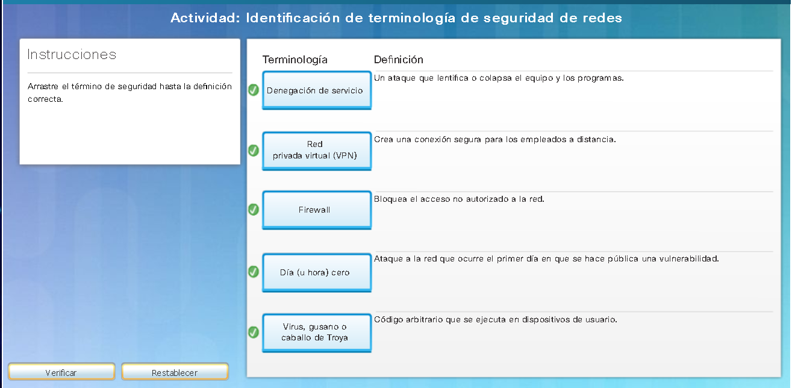
La función de la red cambió de una red únicamente de datos a un sistema que permite conectar personas, dispositivos e
información en un entorno de red convergente y con gran variedad de medios. Para que las redes funcionen eficazmente y
crezcan en este tipo de entorno, se deben crear sobre la base de una arquitectura de red estándar.
La arquitectura de red se refiere a los dispositivos, las conexiones y los productos que se integran para admitir las
tecnologías y aplicaciones necesarias. Una arquitectura de tecnología de red bien planificada ayuda a asegurar la conexión
de cualquier dispositivo en cualquier combinación de redes. Además de garantizar la conectividad, también aumenta la
rentabilidad al integrar la seguridad y la administración de la red, y mejora los procesos empresariales. En la base de
todas las arquitecturas de red —y de hecho, en la base de Internet propiamente dicha—, se encuentran los routers y los switches.
Los routers y los switches transportan datos y comunicaciones de voz y vídeo, además de permitir acceso inalámbrico y
proporcionar seguridad.
La creación de redes que admitan nuestras necesidades actuales y las necesidades y las tendencias del futuro comienza
con una clara comprensión de la infraestructura de switching y routing subyacente. Una vez que se establece una infraestructura
de red básica de switching y routing, las personas, las pequeñas empresas y las organizaciones pueden ampliar la red con
el tiempo mediante el agregado de características y funcionalidades a una solución integrada.


Investigación de oportunidades laborales de TI y redes.
En la parte 1, utiluza un navegador para visitar los sitios web conocidos de bolsas de trabajo monster.com y salary.com.
URL: http://monster.com
URL: http://www.monster.com/geo/siteselection/ - Bolsa de trabajo fuera de EEUU.
Ahora intente refinar la búsqueda agregando ubicaciones geográficas diferentes. ¿Encontro empleos en las ubicaciones que introdujo?
Intente buscar en un sitio diferente. Acceda a http://salary.com.
Fuera de los Estados Unidos la URL es: http://www.payscale.com/rccountries.aspx.
Responda a las siguientes preguntas sobre la base de las conclusiones de la investigación realizada.
a. ¿Qué puesto buscó?
b. ¿Qué aptitudes o certificaciones se requerían?
c. ¿Encontró empleos que anteriormente no sabía que existían? Si la respuesta es afirmativa, ¿cuáles fueron?
d. ¿Encontró empleos que le interesan? Si la respuesta es afirmativa, ¿cuáles son y qué aptitudes o certificaciones requieren?
Un recurso de entretenimiento para ayudar a visualizar los conceptos de red es la película animada "Warriors od the net", por TNG Media Lab.
Antes de ver el vídeo, se debe tener en cuenta lo siguiente: En cuanto a los conceptos que ha aprendido en este capítulo, piense en qué momento
del vídeo está en la LAN, en la WAN, en la intranet o en Internet, cuáles son los terminales y cuáles los dispositivos intermedios.
Si bien todas las animaciones con frecuencia tienen simplicaciones en ellas, hay un error categórico en el vídeo. Aproximadamente, a los 5 minutos,
se formula la siguiente afirmación "Que sucede cuando el señor IP no recibe un acuse de recibo, simplemente envía un paquete de reemplazo". Esta no es
una función del Protocolo de Internet de la capa 3, que es un protocolo "no confiable" de máximo esfuerzom sino una función del Protocolo TCP de la capa de
transporte. IP se explica en el capítulo 6 y TCP en el 9.
Película.
Las redes e Internet. cambiaron el modo en que nos comunicamos, aprendemos, trabajamos e incluso la forma en que jugamos.
Hay redes de todo tamaño. Pueden ir desde redes simples, compuestas por dos PC, hasta redes que conectan millones de dispositivos.
Internet es la red más extensa que existe. De hecho, el término Internet significa "red de redes". Internet proporciona los servicios que nos permiten conectarnos y
comunicarnos con nuestra familia, nuestros amigos, nuestro trabajo y nuestro interés.
La infraestructura de red es la plataforma que da soporte a la red. Proporciona el canal estable y confiable por el cual se producen las comunicaciones.
Consta de componentes de red, incluidos terminales, dispositivos intermediariosy medios de red.
Las redes deben ser confiables. Esto significa que las redes deben ser tolerantes a fallas, escalables, porporcionar calidad de servicio y garantizar la
seguridad de la información y de los recursos en ellas. La seguridad de la red es una parte integral de las redes de PC, independientemente de si la red está limitada
a un entorno doméstico con una única conexión a Internet o si es tan extensa como una empresa con miles de usuarios. No hay una solución única que pueda proteger una red
contra la variedad de amenazas que existen. Por este motivo, la seguridad debe implementarse en varias capas, y debe utilizarse más de una solución de seguridad.
La infraestructura de red puede variar ampliamente en términos de tamaño, cantidad de usuarios, y cantidad y tipo de servicios que admiten.
La infraestructura de red debe crecer y ajustarse para admitir la forma en que se utiliza la red. La plataforma de routing y switching es la base de toda infraestructura
de red.
Este capitulo se centro en las redes como plataforma principal para permitir la comunicacion.- En el capitulo siguiente, se presentara el Sistema Operativo Internetwork (IOS)
de Cisco utilizado para permitir el oruting y switching en entornos de red de Cisco.
Todas las computadoras requieren un sistema operativo para funcionar, incluso los dispositivos de red basados en PC, como switches, routers, puntos de acceso y firewalls.
Estos dispositivos de red utilizan un sistema operativo conocido como sistema operativo de red.
Un sistema operativo de red habilita el hardware del dispositivo que funcione y proporciona una interfaz para qie los usuarios interactúen.
El Sistema Operativo Internetwork (IOS) de Cisco es un términi genérico para la colección de sistemas operativos de red que se utilizan en los dispositivos de red Cisco. Cisco IOS
se utiliza en la mayoría de los dispositivos Cisco, independientemente del tamaño o el tipo de dispositivo.
Imagine que ingresa como ingeniero a una empresa que fabrica automóviles. Actualmente, la empresa trabaja en un nuevo modelo de automóvil.
Este modelo tendrá ciertas funciones que el conductor podrá controlar mediante comandos de voz específicos.Debe diseñar el conjunto de comandos
que utiliza ese sistema de control activado por voz.Algunas de las funciones del automóvil que se pueden controlar mediante comandos de voz son las siguientes:
- Luces
- Limpiaparabrisas
- Radio
- Equipo de teléfono
- Aire acondicionado
- Encendido
Su tarea consiste en idear un conjunto simple de comandos orales que se usarán para controlar estos sistemas e identificar cómo deben ejecutarse.
¿De qué manera puede ayudar a operar un vehículo la creación de conjunto de comandos de voz? ¿Cómo podrían usarse esos mismos comandos en una PC o en un sistema operativo de red?
Todos los terminales y dispositivos de red requieren un sistema operativo (SO). Cómo se muestra en la figura, la parte del SO que interactúa directamente con el hardware
de la computadora se conoce como el núcleo. La parte que interactúa con las aplicaciones y el usuario se conoce como shell. El usuario puede interactuar con el
shell mediante la interfaz de linea de comandos (CLI) o la interfaz gráfica del usuario (GUI).
 Al emplear la CLI como se muestra en la figura, el usuario interactúa directamente con el sistema en un entorno basado en texto introduciendo comandos con el teclado en una ventana de
petición de entrada de comandos. el Sistema ejecuta el comando y, por lo generalm proporciona una respuesta en forma de texto. La CLI necesita muy poca sobrecarga para operar.
Sin embargo, exige que el usuario tenga conocimientos de la estructura subyacente que controla el sistema.
Al emplear la CLI como se muestra en la figura, el usuario interactúa directamente con el sistema en un entorno basado en texto introduciendo comandos con el teclado en una ventana de
petición de entrada de comandos. el Sistema ejecuta el comando y, por lo generalm proporciona una respuesta en forma de texto. La CLI necesita muy poca sobrecarga para operar.
Sin embargo, exige que el usuario tenga conocimientos de la estructura subyacente que controla el sistema.
 Una interfaz de usuario GUI, como Windows, SO X, Apple IOS, Andorid, permite que el usuario interactúe con el sistema en un entorno que usa gráficos, menús y ventanas. El ejemplo de GUI
en la figura es más fácil de utilizar y exige menos conocimientos de la estructura de comandos subyacente que controla el sistema. Por este motivo, muchas personas prefieren entornos GUI.
Una interfaz de usuario GUI, como Windows, SO X, Apple IOS, Andorid, permite que el usuario interactúe con el sistema en un entorno que usa gráficos, menús y ventanas. El ejemplo de GUI
en la figura es más fácil de utilizar y exige menos conocimientos de la estructura de comandos subyacente que controla el sistema. Por este motivo, muchas personas prefieren entornos GUI.

Nota:El sistema operativo de los routes doméstivos generalmente se denomina "firmware". El método más frecuente para configurar un router doméstico consiste en
utilizar un explorador web para acceder a una GUI.
Los sistemas operativos de red son similares al sistema operativo de una PC. Mediante GU, un sistema operativo de PC permite que un usuario realice lo siguiente:
un siwtch de Cisco puede implementarse sin ninguna configuración, y de todas maneras conmutarña los datos entre los dispositivos conectados. Al conectar dos PC a un switch, esas PC tienen conectividad
mutua en forma inmediata.
Si bien un switch de Cisco funcionará de inmediato, la mejor práctica recomendada es configurar lso parámetros iniciales. Existen varias formas de acceder al entorno de la CLI
y configurar el dispositivo. Los métodos más comunes son los siguientes:
Existen varios programas excelentes de emulación de terminales disponibles para conectarse a un dispositivo de red mediante una conexión serial por un puerto de consola o mediante una conexión Telnet o SSH. Algunos de estos programas incluyen los siguientes:

Para la configuración por primera vez de un dispositivo Cisco, se debe establecer una conexión de consola. Una vez listo este paso, el técnico de red debe navegar a través de diversos modos de comando de la CLI del IOS. Los modos de Cisco IOS utilizan una estructura jerárquica y son muy similares para switches y routers.
Como característica de seguridad, el software IOS de Cisco divide el acceso de administración en los sigueintes dos modos de comando:
para configurar el dispositivo, el usuario debe ingresar al modo de configuración global, que normalmente se denomina "modo de config. global".
Desde el modo de configuración global, se realizan cambios en la configuración de la CLI que afectan la operación del dispositivo en su totalidad. El modo de configuración global se identifica por una petición de entrada que finaliza
(config)# luego del nombre del dispositivo, como Switch(config)#.
Antes de acceder a otros modos de configuración especificos, se accede al modo de configuración global. En el modo de configuración global, el usuario puede ingresar a diferentes modos de subconfiguración. Cada uno de estos modos permite la
configuración de una parte o función específica del dispositivo IOS. Los dos tipos de modos de subconfiguración incluyen lo siguiente:
Se utilizan varios comandos para pasar dentro o fuera de los comandos de petición de entrada. Para pasar del modo EXEC del usuario al modo EXEC con privilegios,
ingrese el comando enable. Use el comando disable del modo EXEC con privilegios para regresar al modo EXEC del usuario.
Nota. El modo EXEC con privilegios se suele llamar modo enable.
Existen diversos tipos de mosos de dubconfiguración. Por ejmplo, para introducir un modo de subconfiguración, debe utilizar el comando line seguido
del número y tipo de linea de administración al que desea acceder. Para salir de un modo de subconfiguración y volver al modo de configuración global, use el comando
exit. Observe los cambios en el comando de petición de entrada.
Switch (config)# line console 0
Switch (config-line)# exit
Switch (config)#
Para pasar de cualquier modo de subconfiguración del modo de configuración global al modo que se encuentra un nivel más arriba en la jerarquía de modos, introduzca el
comando exit. end o presione la combinación de teclas Ctrl+Z.
Switch (config-line)# end
Switch #
Los dispositivos Cisco IOS admiten muchos comandos. Cada comando de IOS tiene una sintaxis o formato específico y puede ejecutarse solamente en el modo adecuado. La sintaxis general para un comando es el comando seguido de las palabras clave y los argumentos correspondientes.

Un comando podría requerir uno o más argumentos. Para determinar cuáles son las palabras clave y los argumentos requeridos para un comando, consulte la sintaxis de comandos.
La sintaxis proporciona el patrón o el formato que se debe utilizar cuando se introduce un comando.
Como se identifica en la tabla de la figura, el texto en negrita indica comandos y palabras clave que se introducen literalmente como se muestra. El texto en cursiva indica los
argumentos para los cuales el usuario proporciona el valor.
Por ejemplo: la sintaxis para usar el comando description es description cadena. El argumento es un valor de cadena proporcionado por el usuario. El comando descripción
suele utilizarse para identificar el propósito de una interfaz. Por ejemplo, cuando se ingresa el comando description se conecta al switch de la oficina de la sede
principal, describe la ubicación del otro dispositivo al otro extremo de la conexión.
Los siguientes ejemplos muestran algunas convenciones utilizadas para registrar y usar comandos de IOS.

ping y el argumento definido por el usuario es la direccion-ip del dispositivo de destino. Por ejemplo.
ping a 10.10.10.5.
traceroute y el argumento definido por el usuario es la direccion-ip del dispositivo de destino. Por ejemplo.
traceroute 192.168.254.254
El IOS tiene dos formas de ayuda disponibles.
La interfaz de línea de comandos IOS proporciona teclas de acceso rápido y métodos abreviados que facilitan la configuración, el monitoreo
y la resolución de problemas, como se muestra en la figura.

Los comandos y las palabras clave pueden acortarse a la cantidad mínima de caracteres que identifica a una selección única. Por ejemplo, el
comando configure puede acortarse a conf, ya que configure es el único comando que empieza con conf.
Una versión más breve, como con, no dará resultado, ya que hay más de un comando que empieza con con. Las palabras clave
también pueden acortarse.
En esta actividad, practicará las habilidades necesarias para navegar dentro de Cisco IOS, incluidos distintos modos de acceso de usuario,
diversos modos de configuración y comandos comunes que utiliza habitualmente. También practicará el acceso a ayuda contextual mediante la configuración
del comando clock.
Actividad
Al configurar un dispositivo de red, uno de los primeros pasos es la configuración de un nombre de dispositivo único o nombre de host. Los nombres de host aparecen
en las peticiones de entrada de la CLI, pueden utilizarse en varios procesos de autentificación entre dispositivos y deben utilizarse en los diagramas de topologías.
Si el nombre del dispositivo no se configura explícitamente, Cisco IOS utiliza un nombre de dispositivo predeterminado de fábrica. El nombre predeterminado de los switches
Cisco IOS es "Switch". Si se dejara el nombre predeterminado. Por ejemplo, al acceder a un dispositivo remoto mediante SSH, es importante tener la configuración de que se está
conectando al dispositivo correcto.
Al elegir nombre atinadamente, resulta más fácil recordar, analizar e identificar los dispositivos de red. En la figura se enumeran las pautas para la configuración de nombres de host.
Los nombres de host utilizados en los IOS del dispositivo conservan el uso de caracteres en mayúsculas y minúsculas. Por lo tanto, es posible escribir un nombre con mayúsculas como
se haría normalmente. Esto contrasta con la mayoría de los esquemas de denominación de Internet, donde los caracteres en mayúsculas y minúsculas reciben igual trato.
Por ejemplo, en la figura 2, tres switches que se encuentran en tres pisos diferentes están interconectados en una red. La convención de denominación que se utilizó tuvo en cuenta la ubicación
y el propósito de los dispositivos. La documentación de red debe explicar cómo se seleccionaron estos nombres para que se pueda seguir el mismo criterio en la denominación de los dispositivos adicionales.

Una vex que se ha identificado la convención de denominación, el próximo paso es aplicar los nombres a los dispositivos usando la CLI.
Como se muestra en la figura, desde el modo EXEC privilegiado, acceda al modo de configuración global ingresando el comando configure terminal.
Observe el cambio en el comando de petición de entrada.

Desde el modo de configuración global, introduzca el comando hostname seguido del nombre del switch y presione la tecla intro. Observe
el cambio en el comando de petición de entrada.
Nota: Para eliminar el nombre de host configurado y regredar a la petición de entrada predeterminada, utilice el comando de configuración
global no hostname.
Siempre asegúrese de que la documentación esté actualizada cada vez que se agrega o modifica un dispositivo. Indique los dispositivos en la documentación por su
ubicación, propósito y dirección. Utilice el verificador de sintaxis de la figura para practicar la introducción de un nombre de host en un switch.

El uso de contraseñas simples o fáciles de adivinar continúa siendo un problema de seguridad en mucahs facetas del mundo empresarial. Los dispositivos de red, incluso los routers inalámbricos
hogareños, siempre deben tener contraseñas configuradas para limitar el acceso administrativo.
Cisco IOS puede configurarse para utilizar contraseñas en modo jerárquico y permitir diferentes privilegios de acceso al dispositivo de red.
Todos los dispositivos de red deben tener acceso limitado como se muestra abajo.
Protección del acceso administrativo
- Proteja el acceso a EXEC privilegiado con una contraseña.
- Proteja el acceso a EXEC de usuario con una contraseña.
- Proteja el acceso a Telnet remoto con una contraseña.
Utilice contraseñas seguras que no se descubran fácilmente. Tenga en cuenta los puntos claves que se muestran en la parte inferior.Otras tareas.
- Encripte todas las contraseñas.
- Proporcione notificación legal.
Cuando seleccione contraseñas.
- Use contraseñas que tengan más de 8 caracteres.
- Use una combinación de letras mayúsculas y minúsculas, números, caracteres especiales o secuencias numéricas.
- Evite el uso de la misma contraseña para todos los dispositivos.
- No use palabras comunes porque se descubren fácilmente.
La contraseña más importante para configurar es la de acceso al modo EXEC privilegiado, como se muestra en la figura 1. Para proteger el acceso a EXEC con privilegios,
utilice el comando de configuración global enable secret password.

Para proteger el acceso a EXEC de usuario, el puerto de consola debe estar configurado, como se muestra en la figura.
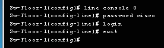
Ingrese al modo de configuración de consola de línea con el comando de configuración global line console 0. El cero se usa para representar la primera (y en
la mayoría de los casos la única) interfax de consola. Luego, configure la contraseña del modo EXEC de usuario con el comando de contraseña password password
Finalmente, habilite el acceso EXEC de usuario con el comando login. El acceso a la consola ahora requerirá una contraseña antes de poder acceder al modo EXEC del usuario.
Las lineas de terminal virtual (VTY) habilitan el accese remoto al dispositivo. Para proteger las líneas VTY que se utilizan para SSH y Telnet, ingrese al modo de linea VTY con el comando
de configuración global line vty 0 15, como se muestra en la figura. Muchos switches de Cisco admiten hasta 16 lineas VTY que se numeran del 0 al 15. Luego, especifique
la contraseña de VTY con el comando de contraseña password password. Por último, habilite el acceso a VTY con el comando login.
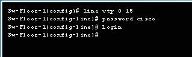

Los archivos startup-config y running-config muestran la mayoria de las contraseñas en texto no cifrado. Esta es una amenaza de seguridad dado que cualquier persona
puede ver la contraseña utilizadas si tiene acceso a estos archivos.
Para cifrar las contraseñas, utilice el comando de configuración global service password-encryption. El comando aplica un cifrado débil a todas las contraseñas no cifradas. Este
cifrado solo se aplica a las contraseñas del archivo de configuración, no a las contraseñas mientras se envían a través de los medios. El propósito de este comando es evitar que individuos no
autorizados vean las contraseñas en el archivo de configuración.
Utilice el comando show running-config para verificar que las contraseñas se hayan encriptado. Use el verificador de sintaxis de la figura para practicar el cifrado de contraseñas.
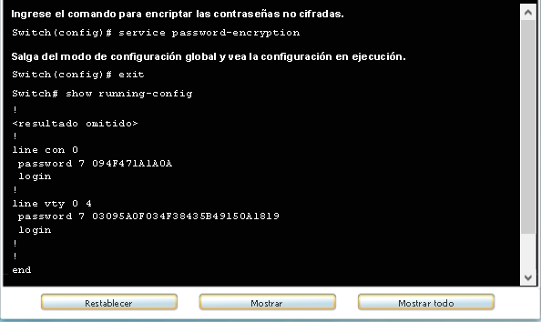
Aunque el pedido de contraseña es un modo de impedir el acceso a la red de personas no autorizadas, resulta vital proveer un método para informar que solo el personal autorizado debe intentar obtener acceso
al dispositivo. Para hacerlo, agregue un aviso a la salida del dispositivo. Los avisos pueden ser una parte importante en los procesos legales en el caso de una demanda por el ingreso no autorizado a un
dispositivo. Algunos sistemas legales no permiten la acusación, y ni siquiera el monitoreo de los usuarios, a menos que haya una notificaciñon visible.
Para crear un mensaje de aviso del día en un dispositivo de red, utilice el comando de configuración global banner motd # el mensaje del día #. El símbolo "#" en la sintaxis del comando se denomina
carácter delimitador. Se ingresa antes y después del mensaje. El carácter delimitador puede ser cualquier carácter siempre que no aparezca en el mensaje. Por este motivo, a menudo se usan símbolos como '#'. Una
vez que se ha ejecutado el comando, aparecerá el aviso en todos los intentos posteriores de acceso al dispositivo hasta que el aviso se elimine.
Ya que cualquier persona que intenta iniciar sesión puede ver los avisos, se debe redactar el mensaje cuidadosamente. El contenido o las palabras exactas de un aviso depende d elas leyes locales y de las políticas
de la empresa. Debe aclarar que solo el personal autorizado tiene permitido el acceso al dispositivo. Es inapropiada toda redacción que implique que 'se acepte' o 'se invita' al usuario a iniciar sesión.
Asimismo, el aviso puede incluir cierres programados del sistema y demás información que afecte a todos los usuarios de la red.


Limito correctamente el acceso a un switch.
Existen dos archivos de sistema que almacenan la configuración de dispositivos.
show running-config en el modo EXEC privilegiado para ver un archivo de configuración en ejecución. Para ver el archivo de configuración de inicio, ejecute el comando show startup-config
en el modo EXEC privilegiado. copy running-config startup-config en el modo EXEC privilegiado.
Si los cambios realizados en la configuración en ejecución no tiene el efecto deseado y el archivo running-config aún no se ha guardado,
puede restablecer el dispositivo a su configuración anterior eliminando los comandos modificados, o bien volver a cargar el dispositivo con el comando
reload en el modo EXEC con privilegios para restablecer la configuración de inicio.
La desventaja de usar el comando reload para eliminar una configuración en ejecución sin guardar es el breve tiempo que el dispositivo estará sin conexión
lo que provocará tiempo de inactividad de la red.
Cuando se inicia una recarga, el IOS detectará que la configuración en ejecución tiene cambios que no se guardaron en la configuración de inicio.
Aparecerá una petición de entrada para preguntar si se desea guardar los cambios. Para descartar los cambios, ingrese n o no.
Como alternativa, si se guardan los cambios no deseados en la configuración de inicio, posiblemente sea necesario eliminar todas las configuraciones. Esto requiere
borrar la configuración de inicio y reiniciar el dispositivo. La configuración de inicio se elimina con el uso del comando erase startup-config en el
modo EXEC privilegiado. Una vez que se elimine el comando, el switch le solicita configuración. Presione Intro para aceptar.
Después de eliminar la configuración de inicio de la NVRAM, recargue el dispositivo para eliminar el archivo de configuración actual en ejecución de la memoria RAM.
En la recarga, un switch cargará la configuración de inicio predeterminada que se envió originalmente con el dispositivo.
Los archivos de configuración pueden guardarse y archivarse en un documento de texto. Esta secuencia de pasos asegura la disponibilidad de una copia utilizable del
archivo de configuración para su modificación o reutilización en otra oportunidad.
Por ejemplo, suponga que se configuró un switch y que la configuración en ejecución se guardó en el dispositivo.

show running-config o show startup-config ante la petición de entrada de EXEC privilegiado. El texto que aparece en la
ventana del terminal se colocará en el archivo elegido.

El uso de direcciones IP es el principal medio para permitir que los dispositivos se ubiquen entre sí y para establecer la comunicación completa en Internet. Cada terminal en una red
se debe configurar con direcciones IP. Algunos ejemplos de terminales se muestran en la figura.
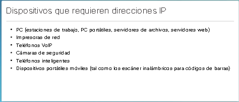
La estructura de una dirección IPv4 se denomina "notación decimal punteada" y se representa con cuatro números decimales entre 0 y 255. Las direcciones IPv4 son números asignados a los
dispositivos individuales conectados a una red.
Con la dirección IPv4, también se necesita una máscara de subred. Una máscara de subred IPv4 es un valor de 32 bits que separa la porción de red de la dirección de la porción de host.
Combinada con la dirección IPv4, la máscara de subred determina la subred particular a la pertenece el dispositivo.
El ejemplo de la figura inferior muestra la dirección IPv4 (192.168.1.10), la máscara de subred (255.255.255.0) y el gateway predeterminado (192.168.1.1) asignados a un host. La dirección de
gateway predeterminado es la dirección IP del router que el host utilizará para acceder a las redes remotas, incluso a Internet.
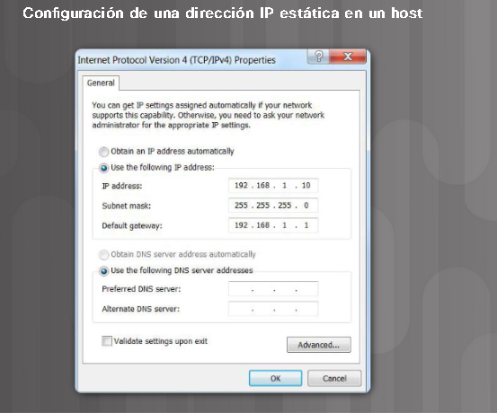
Las direcciones IP se pueden asignar tanto a los puertos físicos como a las interfaces virtuales de los dispositivos. Una interfaz virtual significa que no hay hardware físico en el
dispositivo asociado a ella.
Las comunicaciones de red dependen de las interfaces de los dispositivos para usuarios finales, las interfaces de los dispositivos de red y los cables que las conectan. Cada interfaz física tiene especificaciones o estándares que la definen. Los cables que se conectan a la interfaz deben estar diseñados para cumplir con los estándares físicos de la interfaz. Los tipos de medios de red incluyen los cables de cobre de par trenzado, los cables de fibra óptica, los cables coaxiales o la tecnología inalámbrica, como se muestra en la figura. 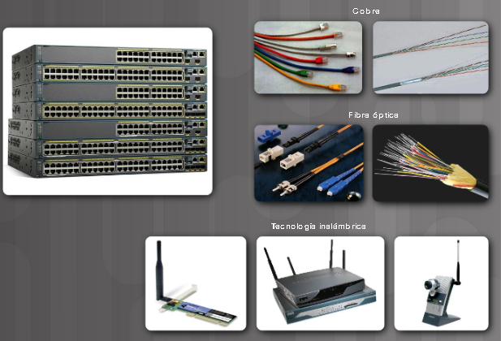 Los diferentes tipos de medios de red tienen diferentes características y beneficios. No todos los medios de red tienen las mismas características ni son adecuados para el mismo fin. Algunas de las diferencias entre los distintos tipos de medios incluyen las siguientes:
Para que un terminal se comunique a través de la red, se debe configurar con una dirección IPv4 y una máscara de subred únicas. La información de dirección IP se puede introducir en los
terminales en forma manual o automáticamente mediante el Protocolo de configuración dinámica de host (DHCP).

Para configurar una dirección IPv4 de forma manual en un host de Windows, abra Panel de Control > Centro de redes y recursos compartidos > Cambiar configuración del adaptador y
seleccione el adaptador. Luego, haga clic con el botón secundario y seleccione Propiedades para que aparezcan las Propiedades de conexión de área local, como se muestra en la figura inferior.
Resalte el protocolo de Internet versión 4 (TCP/IPv4) y haga clic en Propiedades para abrir la ventana de Propiedades del protocolo de Internet versión 4 (TCP/IPv4), como se muestra en la
siguiente figura.

Configure la información de la dirección IPv4 y la máscara de subred, y el gateway predeterminado.
Nota: La dirección del servidor DNS es la dirección IPv4 del servidor del sistema de nombres de dominio (DNS), que se utiliza para traducir direcciones IP a direcciones web,
como www.cisco.com.
En general, las PC utilizan DHCP de forma predeterminada para la configuración automática de direcciones IPv4. DHCP es una tecnología que se utiliza en casi todas las redes. Para comprender mejor por qué DHCP es tan popular, tenga en cuenta todo el trabajo adicional que habría que realizar sin este protocolo.
En una red, DHCP permite la configuración automática de direcciones IPv4 para cada terminal con DHCP habilitado. Imagine la cantidad de tiempo que le llevaría si cada vez que se conectara a la red tuviera que introducir manualmente la dirección IPv4, la máscara de subred, el gateway predeterminado y el servidor DNS.
Multiplique eso por cada usuario y cada uno de los dispositivos en una organización y se dará cuenta del problema. La configuración manual también aumenta las posibilidades de configuraciones incorrectas provocadas por la duplicación de la dirección IPv4 de otro dispositivo.
Como se muestra en la figura para configurar el protocolo DHCP en una PC con Windows, solo debe seleccionar “Obtener una dirección IP automáticamente” y “Obtener la dirección del servidor DNS automáticamente”. Su PC buscará un servidor DHCP y se le asignarán los ajustes de dirección necesarios para comunicarse en la red.
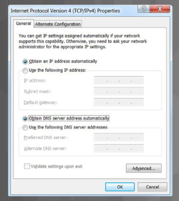
Es posible mostrar los ajustes de configuración IP en una PC con Windows usando el comando ipconfig cuando el sistema se lo solicite. El resultado muestra la información de dirección IPv4, máscara de subred y gateway que se recibió del servidor DHCP.
Utilice el verificador de sintaxis de la figura inferior para practicar cómo mostrar la dirección IPv4 en una PC con Windows.

Para acceder al switch de manera remota, se deben configurar una dirección IP y una máscara de subred en la SVI. Para configurar una SVI en un switch, utilice el comando de configuración global interface vlan 1. La Vlan 1 no es una interfaz fisica real, sino una virtual. A continuación, asigne una dirección IPv4
mediante el comando ip address ip-address subnet-mask para la configuración de interfaz. Finalmente, habilite la interfaz virtual con el comando de configuración de interfaz no shutdiwn.
Una vez que se configure estos comandos, el switch tiene todos los elementos IPv4 listos para la comunicación a través de la red.


Implementación basica de conectividad.
PKA Conectividad Básica
Del mimso modo que se usan comandos y utilidades como ipconfig para verificar la configuración de red de un host de PC, se deben usar los comandos para verificar los ajustes de interfaces y dirección de los dispositivos intermediarios, como switches y routers.
> enable
> show ip interface brief.
El comando ping puede utilizarse para probar la conectividad de otro dispositivo en la red o un istio web en Internet.
Parte 1: Configuración de la topología de la red (Ethernet únicamente)
Parte 2: Configuración de hosts en las PC
Parte 3: Configuración y verificación de los parámetros básicos del switch
Doc. Build Simple Network.
Integración de habilidades
Integracion de habilidades PKA.
Cisco IOS es un término que abarca diferentes sistemas operativos que se ejecutan en diversos dispositivos de redes. El técnico puede introducir comandos para
configurar o programar el dispositivo a fin de que lleve a cabo diversas funciones de redes. Los routers y switches Cisco IOS realizan funciones de las cuales dependen los
profesionales de red para hacer que sus redes funcionen de la forma esperada.
Se accede a los servicios que proporciona Cisco IOS mediante una interfaz de línea de comandos (CLI), a la que se accede a través del puerto de consola, el puerto auxiliar
o mediante Telnet o SSH. Una vez que se conectan a la CLI, los técnicos de red pueden realizar cambios de configuración en los dispositivos Cisco IOS, Cisco IOS está diseñado
como sistema operativo modal, esto significa que los técnicos de red deben navegar a través de diversos modos jerárquicos del IOS. Cada modo admite distintos comandos del IOS.
Los routers y switches Cisco IOS admiten sistemas operativos modales y estructuras de comandos similares, así como muchos de los mismos comandos. Además, los pasos de configuración
inicial durante su implementación en una red son idénticos para ambos dispositivos.
En este capítulo, se presentó Cisco IOS. Se explicarion los diversos modos de Cisco IOS en detalle y se analizó la estructura básica de comandos que se utiliza para configurarlo.
También se exploró la configuración inicial de los dispositivos de switch Cisco IOS, que incluye la configuración de un nombre, la limitación del acceso a la configuración de dispositivos,
la configuración de mensajes de aviso y el guardado de la configuración.
En el capítulo siguiente, se analiza cómo se desplazan los paquetes a través de la infraestructura de red y se presentan las reglas de comunicación de paquetes.
Las redes nos conectan cada vez más. Las personas se comunican en línea desde cualquier lugar. Las conversaciones que tienen lugar en las aulas pasan a las sesiones de chat de mensajes
instantáneos, y los debates en línea continúan en el lugar de estudios. Diariamente, se desarrollan nuevos servicios para aprovechar la red.
En lugar de crearsistemas exclusivos e independientes para la prestación de cada servicio nuevo, el sector de redes en su totalidad adoptó un marco de desarrollo que permite que los diseñadores
comprendan las plataformas de red actuales y las mantengan. Al mismo tiempo, este marco se utiliza para facilitar el desarrollo de nuevas tecnologías, a fin de satisfacer las necesidades de las
comunicaciones y las mejoras tecnológicas futuras.
Un aspecto fundamental de este marco de desarrollo es el uso de modelos generalmente aceptados que describen reglas y funciones de red.
Este capítulo, obtendrá información sobre estos modelos, sobre los estándares que hacen que las redes funcionen y sobre la forma en que se produce la comunicación a través de una red.
Designación de un sistema de comunicaciones
Una red puede ser tan compleja como los dispositivos conectados a través de Internet, otan simple como dos PC conectadas directamente entre sí mediante un único cable, o puede tener cualquier grado
de complejidad intermedia. Las redes pueden variar en lo que respecta al tamaño, la forma y la función. Sin embargo, realizar simplemente la conexión física por cable o inalámbrica entre los terminales
no es suficiente para habilitar la comunicación. Para que se produzca la comunicación, los dispositivos deben saber "como" comunicarse.
Las personas intercambian ideas mediante diversos métodos de comunicación. Sin embargo, independientemente del método elegido, todos los métodos de comunicación tienen tres elementos en común. El primero
de estos elementos es el origen del mensaje, o emisor. Los orígenes de los mensajes son las personas o los dispositivos electrónicos que deben enviar un mensaje a otras personas o dispositivos. El segundo
elemento de la comunicación es el destino o receptor del mensaje. El destino recibe el mensaje y lo interpreta. Un tercer elemento, llamado canal, está formado por los medios que proporcionan el camino por
el que el mensaje viaja desde el origen hasta el destino.
La comunicación comienza con un mensaje, o información, que se debe enviar desde un origen hasta un destino. El envío de este mensaje, ya sea mediante comunicación cara a cara o a través de una red, está
regido por reglas llamadas “protocolos”. Estos protocolos son específicos del tipo de método de comunicación en cuestión. En nuestra comunicación personal diaria, las reglas que utilizamos para comunicarnos
por un medio, como una llamada telefónica, no son necesariamente las mismas que los protocolos para utilizar otro medio, como enviar una carta.
Antes de comunicarse entre sí, las personas deben usar reglas o acuerdos establecidos que rijan la conversación. Estas reglas o protocolos deben respetarse para que el mensaje se envíe y comprenda conrrectamente. Los protocolos deben dar cuenta de los siguientes requisitos:
Uno de los primeros pasos para enviar un mensaje es codificarlo. La codificación es el proceso mediante el cual la información se convierte en otra forma aceptable para la transmisión.La decodificación revierte este
proceso para interpretar la idea.
La codificación también tiene lugar en la comunicación por computadora, como se muestra en la figura.

La codificación entre host debe tener el formato adecuado para el medio. El host emisor, primero convierte en bits los mensajes enviados a través de la red. Cada bit se codifica en un patrón de sonidos, ondas de luz o
impulsos electrónicos, según el medio de red a través del cual se transmitan los bits. El host de destino recibe y decodifica las señales para interpretar el mensaje.
Cuando se envía un mensaje desde el origen hacia el destino, se debe utilizar un formato o estructura específicos. Los formatos de los mensajes dependen del tipo de mensaje y el canal que se utilice para entregar el mensaje. La escritura de cartas es una de las formas más comunes de comunicación humana por escrito. Durante siglos, el formato aceptado para las cartas personales no ha cambiado. En muchas culturas, una carta personal contiene los siguientes elementos:

Otra regla de comunicación es el tamaño. Cuando las personas se comunican, los mensajes que envían, normalmente, están divididos en fragmentos más pequeños u oraciones. El tamaño de estas oraciones se limita a lo que la persona
que recibe el mensaje puede procesar por vez. Una conversación individual puede estar compuesta por muchas oraciones más pequeñas para asegurarse de que cada parte del mensaje sea recibida y comprendida. Imagine cómo sería leer este
curso si todo el contenido apareciera como una sola oración larga; no sería fácil de comprender.
De manera similar, cuando se envía un mensaje largo de un host a otro a través de una red, es necesario separarlo en partes más pequeñas. Las reglas que controlan el tamaño de las partes, o tramas que se comunican a través de la red,
son muy estrictas. También pueden ser diferentes, de acuerdo con el canal utilizado. Las tramas que son demasiado largas o demasiado cortas no se entregan.
Las restricciones de tamaño de las tramas requieren que el host de origen divida un mensaje largo en fragmentos individuales que cumplan los requisitos de tamaño mínimo y máximo. El mensaje largo se enviará en tramas independientes,
cada trama contendrá una parte del mensaje original. Cada trama tembién tendrá su propia información de direccionamiento. En el host receptor, las partes individuales del mensaje se vuelven a unir para recosntruir el mensaje original.
Estas son las reglas de la participación para la sincronización del mensaje.
El método de acceso determina en qué momento alguien puede enviar un mensaje. Si dos personas hablan a la vez, se produce una colisión de información y es necesario que ambas se detengan y vuelvan a comenzar. De manera similar, las computadoras deben definir un método de acceso. Los hosts de una red necesitan un método de acceso para saber cuándo comenzar a enviar mensajes y cómo responder cuando se produce alguna colisión.
La sincronización también afecta la cantidad de información que se puede enviar y la velocidad con la que puede entregarse. Si una persona habla demasiado rápido, la otra persona tendrá dificultades para escuchar y comprender el mensaje. En la comunicación de la red, los hosts de origen y destino utilizan métodos de control de flujo para negociar la sincronización correcta a fin de que la comunicación sea exitosa.
Si una persona hace una pregunta y no escucha una respuesta antes de un tiempo aceptable, la persona supone que no habrá ninguna respuesta y reacciona en consecuencia. La persona puede repetir la pregunta o puede continuar la conversación. Los hosts de las redes también tienen reglas que especifican cuánto tiempo deben esperar una respuesta y qué deben hacer si se agota el tiempo de espera para la respuesta.
Un mensaje puede entregarse de distintas maneras. En algunos casos, una persona desea comunicar información a un solo individuo. Otras veces, esa persona puede necesitar enviar información a un grupo de personas simultáneamente o, incluso, a
todas las personas de un área.
También puede ocurrir que el emisor de un mensaje necesite asegurarse de que el mensaje se haya entregado correctamente al destino. En estos casos, es necesario que el receptor envíe un acuse de recibo al emisor. Si no se necesita ningún
acuse de recibo, se dice que el envío del mensaje es sin acuse de recibo.
Los hosts en una red utilizan opciones de entrega similares para comunicarse.
Una opción de entrega de uno a uno se denomina “unidifusión”, que significa que el mensaje tiene solo un destinatario.
Si un host necesita enviar mensajes utilizando una opción de uno a varios, se denomina “multidifusión”. La multidifusión es el envío de un mismo mensaje a un grupo de hosts de destino de manera simultánea.
Si es necesario que todos los hosts de la red reciban el mensaje a la vez, se utiliza el método de difusión. La difusión representa una opción de entrega de mensaje de uno a todos.
Algunos protocolos utilizan un mensaje especial de multidifusión
que se envía a todos los dispositivos, lo que lo hace similar en esencia a una difusión. Asimismo, puede ser que los hosts deban emitir un acuse de recibo de algunos mensajes y no para otros.
Un grupo de protocolos interrelacionados que son necesarios para realizar una función de comunicación se denomina suite de protocolos. Los hosts y los dispositivos de red implementan las suites de protocolos en software, hardware o ambos.
Una de las mejores formas para visualizar el modo en que los protocolos interactúan dentro de una suite es ver la interacción como una pila. Una pila de protocolos muestra la forma en que los protocolos individuales se implementan dentro de
una suite. Los protocolos se muestran en capas, donde cada servicio de nivel superior depende de la funcionalidad definida por los protocolos que se muestran en los niveles inferiores. Las capas inferiores de la pila se encargan del movimiento
de datos por la red y proporcionan servicios a las capas superiores, las cuales se enfocan en el contenido del mensaje que se va a enviar.
Como se muestra en la figura, podemos utilizar capas para describir la actividad que tiene lugar en el ejemplo de comunicación cara a cara. En la capa inferior, la capa física, hay dos personas, cada una con una voz que puede pronunciar palabras
en voz alta. En la segunda capa, la capa de las reglas, existe un acuerdo para hablar en un lenguaje común. En la capa superior, la capa de contenido, están las palabras que se pronuncian realmente. Este es el contenido de la comunicación.

A nivel humano, algunas reglas de comunicación son formales y otras simplemente sobreentendidas o implícitas, basadas en los usos y constumbres. Para que los dispositivos se puedan comunicar en forma exitosa, un nuevo conjunto de protocolos de red definen
un formato y un conjunto de reglas comunes para intercambiar mensajes entre dispositivos. Algunos de los protocolos de red más comunes son Hypertext Transfer Protocol(HTTP), el protocolo de control de transmisión (TCP) y el protocolo de Internet(IP).
Nota:En este curso, IP refiere a los protocolos IPv4 e IPv6.
En las figuras, se muestra los protocolos de red que describen lo siguientes procesos:

La comunicación entre un servidor web y un cliente web es un ejemplo de interacción entre varios protocolos. Los protocolos que se muestran en la figura son:
Una suite de protocolos es un grupo de protocolos que trabajan en forma conjunta para proporcionar servicios integrales de comunicación de red. Las suites de protocolos
pueden estar especificadas por una organización o pueden ser desarrolladas por un proveedor. Las suites de protocolos pueden resultar un poco abrumadoras, como las cuatro que
se muestran en la figura.
La suite de protocolos TCP/IP es un estándar abierto, lo que significa que estos protocolos están disponibles para el público sin cargo, y cualquier proveedor puede implementar estos
protocolos en su hardware o software.
Un protocolo basado en estándares es un proceso que recibo el aval del sector de redes y fue aprobado por una organización de estandarización. El uso de estándares en el desarrollo y
la implementación de protocolos aseguran que productos de destintos fabricantes pueden interoperar correctamente. Si un fabricante en particular no observa un protocolo estrictamente,
es posible que sus equipos o software no puedan comunicarse satisfactoriamente con productos hechos por otros fabricantes.
Algunos protocolos son excluidos, lo que significa que una empresa o proveedor controla la definición del protocolo y como funciona AppleTalk y Novell Netware, que son suites de protocolo
antiguas, constituyen ejemplos de protocolos exclusivos. Es común que un proveedor ( o grupo de proveedores) desarrolle un protocolo exclusivo para satisfacer las necesidades de sus clientes
y posteriormente ayude a hacer de ese protocolo exclusivo un estándar abierto.
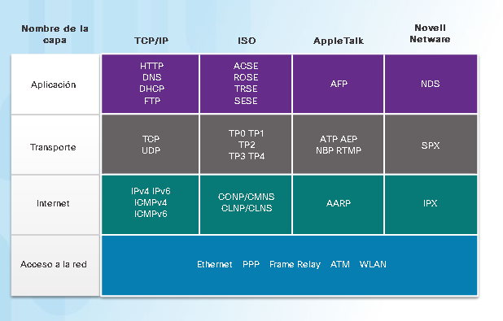
La primera red de conmutación de paquetes, antecesora de Internet actual, fue la red Advanced Research Project Agency Network (ARPANET), que tuvo su origen en 1969 al conectar PC centrales
en cuatro ubicaciones. ARPANET fue fundada por el Departamento de Defensa de los Estados Unidos para que se utilice en universidades y en laboratorios de investigación.
 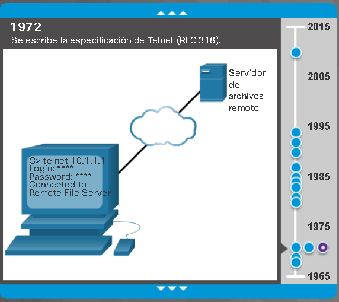
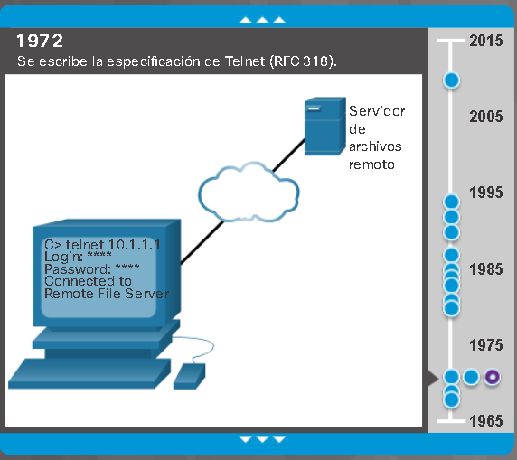
 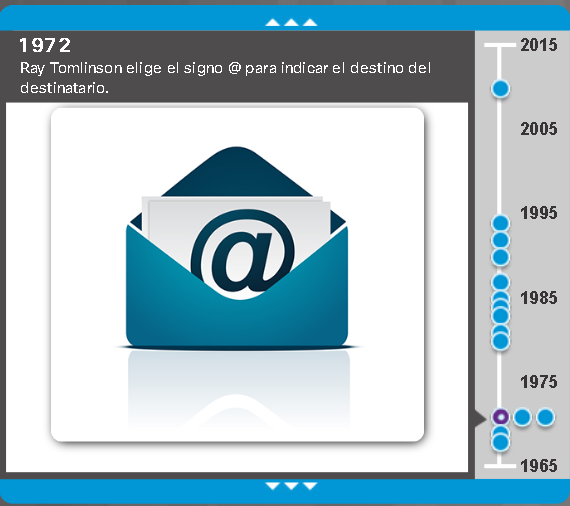
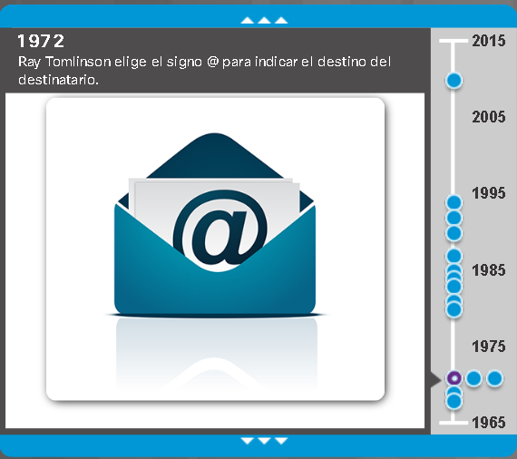

 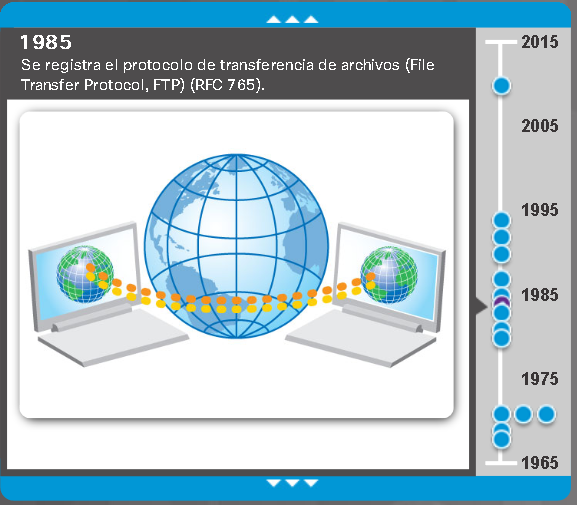
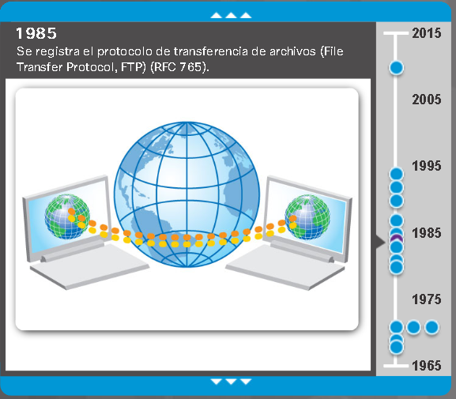
 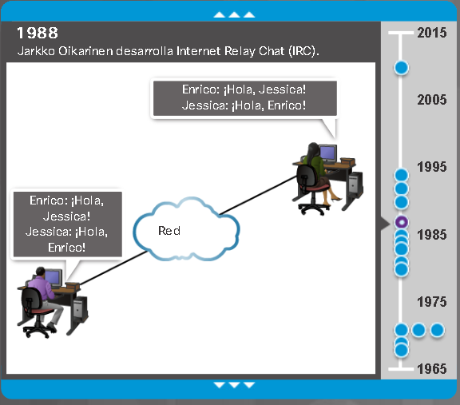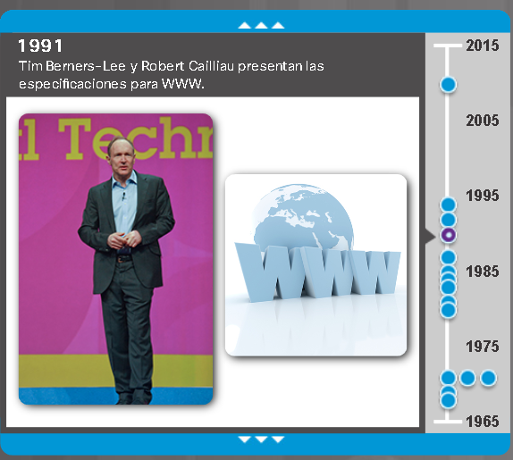
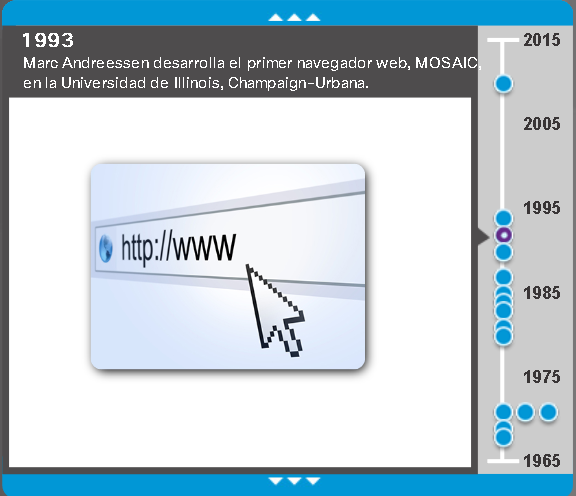
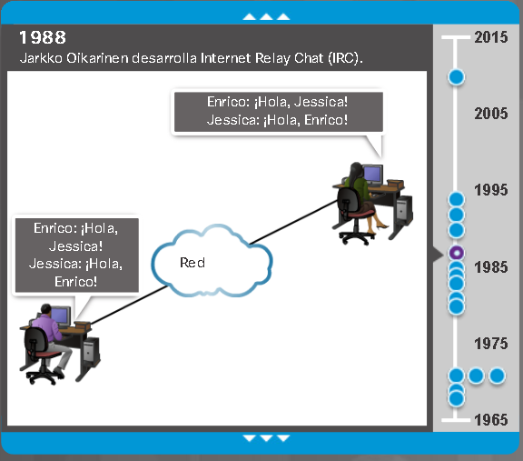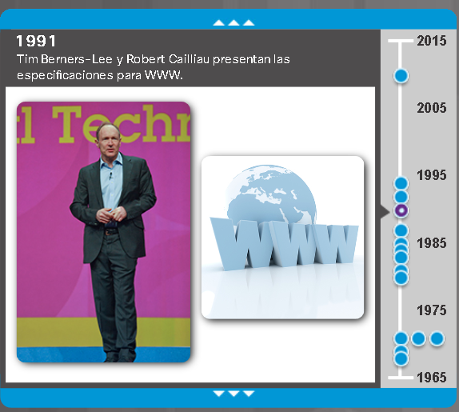
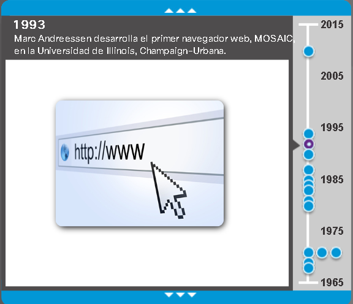 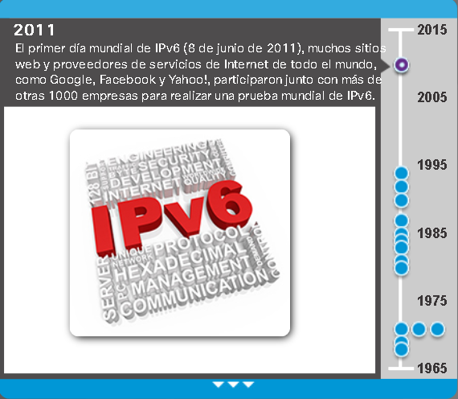
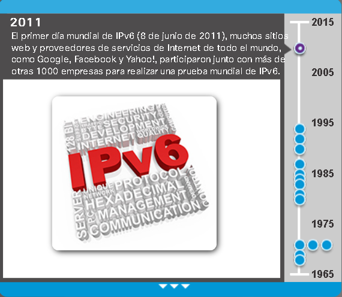
En la actualidad, la suite de protocolos TCP/IP incluye muchos protocolos. Algunos de los más populares se muestran en la figura. Los protocolos de la capa de acceso a la red son responsables de
la entrega de los paquetes IP en los medios físicos. Estos protocolos de capa inferior son desarrollados por organizaciones de estandarización, como el IEEE.

La suite de protocolos TCP/IP se implementa como una pila de TCP/IP tanto en los hosts emisores como en los hosts receptores para proporcionar una entrega completa de las aplicaciones a través de la red. Los protocolos Ethernet se utilizan para transmitir el paquete IP a través de un medio físico que usa la LAN.Sistema de nombres de dominio (o servicio).
Traduce los nombres de dominio tales como cisco.com a direcciones IP.
Protocolo Bootstrap
Habilita una estación de trabajo sin disco para descubrir su propia dirección IP, la dirección IP de un servicio BOOTP en la red y un archivo que debe cargarse en la memoria para iniciar la máquina.
Protocolo de configuración dinámica de host.
Asigna direcciones IP de manera dinámica a estaciones de clientes cuando se unicia.
Permite que las direcciones vuelven a utilizarse cuando ya no se necesitan.Protocolo simple de transferencia de correo.
Permite los clientes envien un correo electrónico a un servidor de correo.
Permite los servidores envien un correo electrónico a otros servidores.Protocolo de oficina de correos, version 3 (POP3).
Permite que los clientes recuperen un correo electrónico de un servidor de correo.
Descarga correo electrónico desde el servidor de correo al escritorio.Protocolo de acceso a mensajes de Internet.
Permite que los clientes accedan a correos electrónicos almacenados en un servidor de correo.
Mantiene el correo electrónico en el servidor.Protocolo de transferencia de archivos.
Establece las reglas que permiten a un usuario en un host acceder y transferir archivos hacia y desde otro host en una red.
Un protocolo confiable de entrega de archivos, orientado a la conexión y que requiere acuse de recibo.Protocolo trivial de transferencia de archivos.
Un protocolo trivial de transferencia de archivos sin conexión.
Un protocolo de entrega de archivos sin acuse de recibo de grandes esfuerzos.
Utiliza menos sobrecarga que FTP.Protocolo de transferencia de hipertexto.
Conjunto de reglas para intercambiar texto, imágenes gráficas, sonido, video y otros archivos multimedia en la World Wide Web.